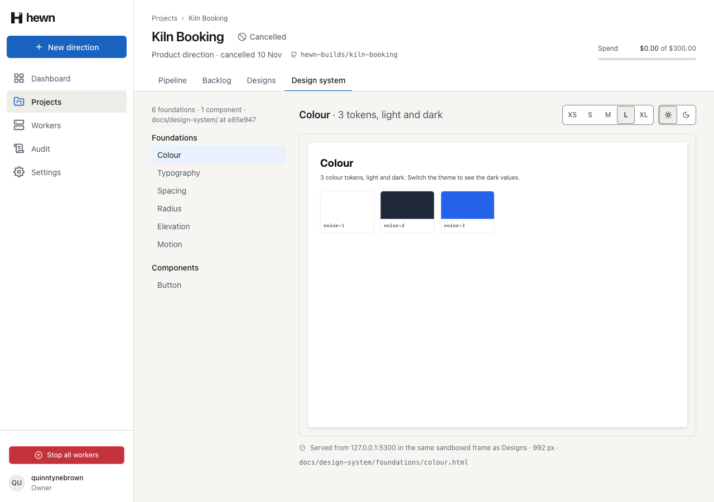
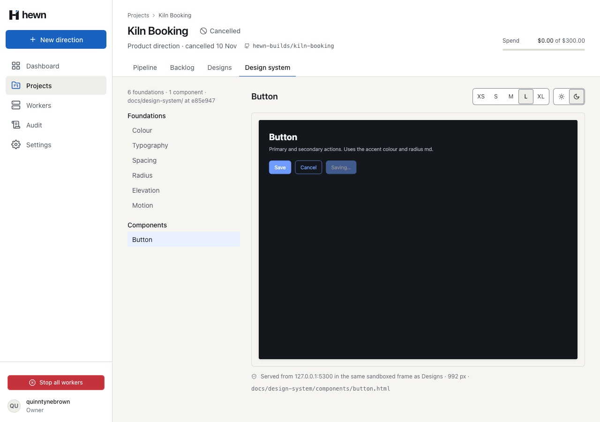
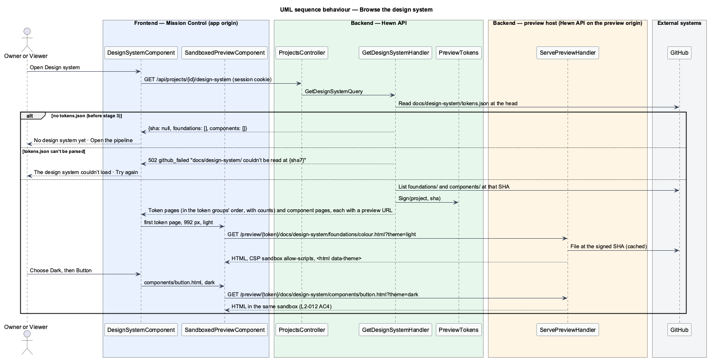
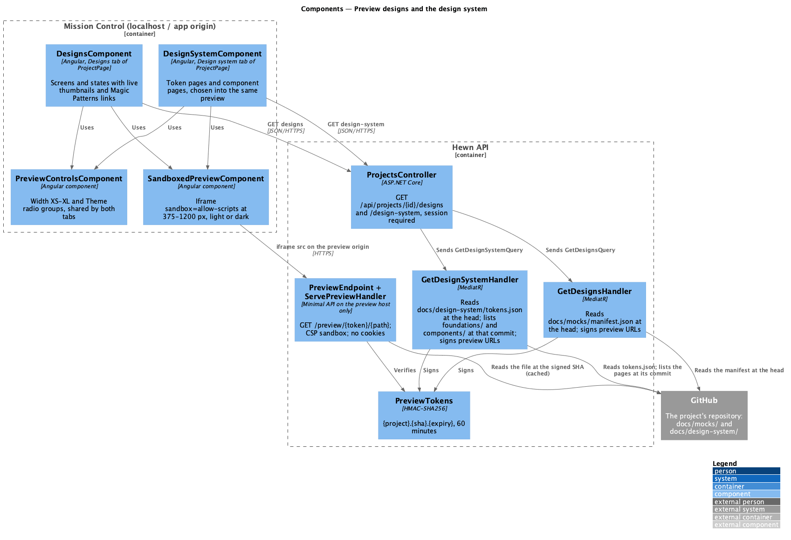
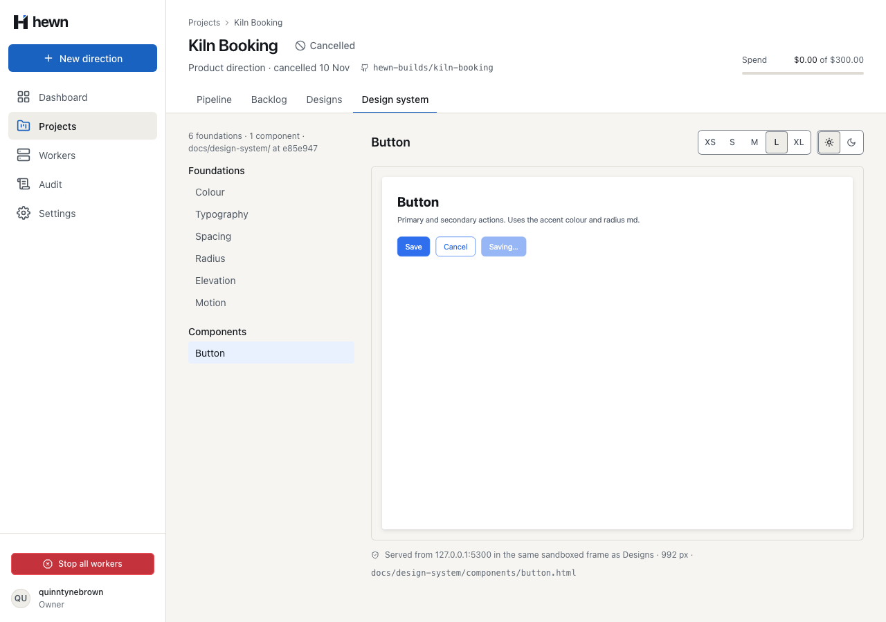
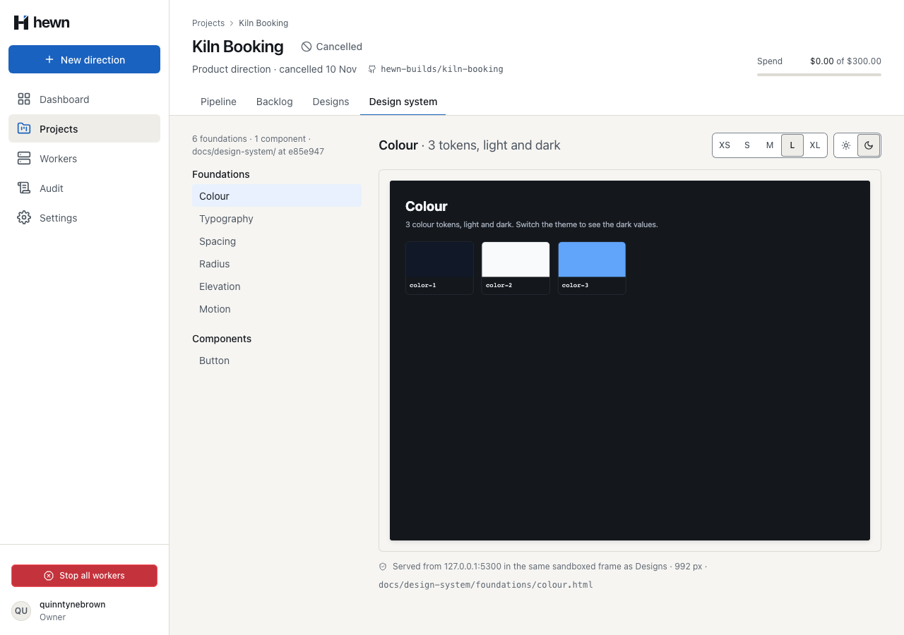
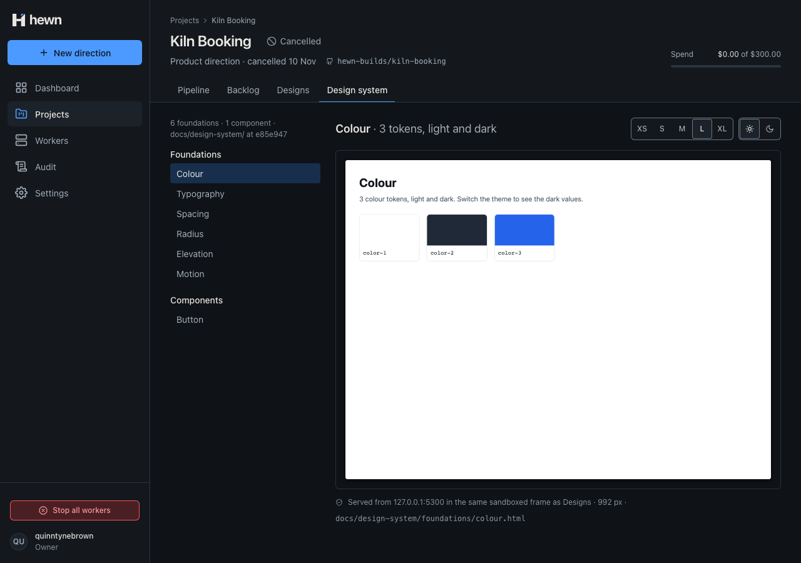
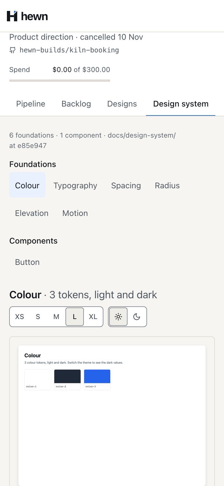
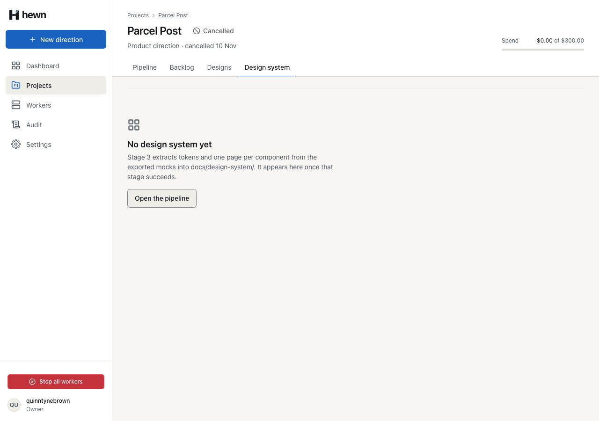
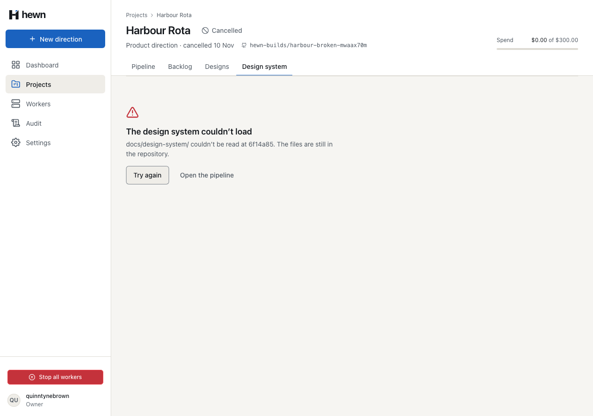

Token and component pages, in the same sandboxed preview as Designs, light and dark.




}
var sha = tokensFile.Sha;
JsonElement tokenGroups;
IReadOnlyList<string> foundationFiles, componentFiles;
try
{
using var document = JsonDocument.Parse(tokensFile.Content);
tokenGroups = document.RootElement.Clone();
foundationFiles = await gitHub.ListFilesAsync(owner, name, $"{Root}foundations", sha, cancellationToken);
componentFiles = await gitHub.ListFilesAsync(owner, name, $"{Root}components", sha, cancellationToken);
}
catch (Exception e) when (e is JsonException or GitHubException)
{
throw new GitHubException($"{Root} couldn’t be read at {sha[..7]}");
}
var foundations = Html(foundationFiles)
.Select(file => (File: file, Group: GroupOf(file[..^".html".Length])))
.OrderBy(f => f.Group is null ? Groups.Length : Array.FindIndex(Groups, g => g.Group == f.Group))
.ThenBy(f => f.File, StringComparer.Ordinal)
.Select(f => Page("foundations", f.File, f.Group))
.ToList();
var components = Html(componentFiles).Select(file => Page("components", file, null)).ToList();
return new DesignSystemDto(sha, foundations, components);
var themed = tokensOf.ValueKind == JsonValueKind.Object
&& tokensOf.TryGetProperty("light", out var light) && light.ValueKind == JsonValueKind.Object
&& tokensOf.TryGetProperty("dark", out var dark) && dark.ValueKind == JsonValueKind.Object;
return themed ? (Leaves(tokensOf.GetProperty("light")), true) : (Leaves(tokensOf), false);
:root { color-scheme: light; --page: #ffffff; --ink: #14181d; --muted: #5b6573; --line: #dde1e6; --accent: #2f6fed; ${vars(tokens.color.light)} }
@media (prefers-color-scheme: dark) { :root:not([data-theme="light"]) { color-scheme: dark; --page: #14181d; --ink: #f4f5f7; --muted: #a3acb9; --line: #2c333c; --accent: #6f9bff; ${vars(tokens.color.dark)} } }
:root[data-theme="dark"] { color-scheme: dark; --page: #14181d; --ink: #f4f5f7; --muted: #a3acb9; --line: #2c333c; --accent: #6f9bff; ${vars(tokens.color.dark)} }
{
skill: 'extracting-design-systems',
outputs: ['docs/design-system/'],
task: 'Extract the design system from docs/mocks/ into docs/design-system/: tokens.json (DTCG) with color.light, color.dark, typography, spacing, radius, elevation and motion; one token page per group under foundations/ (colour, typography, spacing, radius, elevation and motion); and one page per component under components/. Pages follow <html data-theme="light|dark"> as the mocks do. Every colour used in the mocks must match a colour token.',
<div class="cluster">
<h2 class="section__title" style="margin-right: auto">
{{ page.title }}
@if (detail()) {
<span class="text-muted" style="font-weight: var(--font-weight-regular)"
>· {{ detail() }}</span
>
}
</h2>
<hw-preview-controls [(width)]="width" [(theme)]="theme" />
</div>
<div class="preview">
<hw-sandboxed-preview
[url]="page.previewUrl"
[width]="width()"
[theme]="theme()"
export function systemCaption(system: DesignSystem): string {
const at = system.sha ? ` at ${system.sha.slice(0, 7)}` : '';
return `${plural(system.foundations.length, 'foundation')} · ${plural(system.components.length, 'component')} · docs/design-system/${at}`;
}
/** The page shown in the preview: the one chosen while it still exists, else the first token page or component. */
export function pageSelection(system: DesignSystem, path: string | null): DesignSystemPage | null {
const all = [...system.foundations, ...system.components];
return all.find((p) => p.path === path) ?? all[0] ?? null;
}
/** "38 tokens, light and dark" beside a token page's title; nothing for a component. */
export function pageDetail(page: DesignSystemPage): string {
if (page.tokenCount === null) return '';
return `${plural(page.tokenCount, 'token')}${page.lightAndDark ? ', light and dark' : ''}`;
}
GET /preview/{token}/docs/design-system/foundations/colour.html?theme=dark
200 OK
content-type: text/html
content-security-policy: sandbox allow-scripts
x-content-type-options: nosniff
referrer-policy: no-referrer
cache-control: private, max-age=300
set-cookie: (none)

foreach (var page in new[] { Pages(system, "foundations")[0], Pages(system, "components")[0] })
{
var url = new Uri(page.GetProperty("previewUrl").GetString()!);
Assert.Equal(new Uri(PreviewOrigin).Authority, url.Authority);
Assert.EndsWith($"/{page.GetProperty("path").GetString()}", url.AbsolutePath);
var dark = await browser.GetAsync($"{url}?theme=dark");
Assert.Equal(HttpStatusCode.OK, dark.StatusCode);
Assert.Equal("sandbox allow-scripts", string.Join(';', dark.Headers.GetValues("Content-Security-Policy")));
Assert.False(dark.Headers.Contains("Set-Cookie"));
Assert.Contains("<html data-theme=\"dark\" lang=\"en\">", await dark.Content.ReadAsStringAsync());
}
// Tokens, light then dark.
await expect(designSystem.seen('theme')).toHaveText('light');
expect(await designSystem.background()).toBe('rgb(255, 255, 255)');
await designSystem.theme('Dark').click();
await expect(designSystem.frame).toHaveAttribute('src', /colour\.html\?theme=dark$/);
await expect(designSystem.seen('theme')).toHaveText('dark');
expect(await designSystem.background()).toBe('rgb(20, 24, 29)');
// A component page keeps the theme, and the width.
await designSystem.width('XS').click();
await designSystem.pageLink('Button').click();
await expect(designSystem.previewHeading()).toHaveText('Button');
await expect(designSystem.seen('theme')).toHaveText('dark');
await expect(designSystem.seen('width')).toHaveText('375');
await designSystem.theme('Light').click();
await expect(designSystem.seen('theme')).toHaveText('light');
6 new, through the real API and preview host
caption, selection, detail, label
4 behaviour, 4 visual, 4 a11y




